الألوان هي عنصر أساسي في عالم لفن وهي لغة تعبيرية لها القدرة على التأثير في المشاعر وإثارة الأحاسيس المختلفة لدى المشاهد. و عندما ننظر إلى لوحة فنية أول ما يجذبنا هو تدرج الألوان وانسجامها أو تضادها وكيفية توزيعها . ضمن إطار اللوحة و يمكن للألوان أن تعبر عن السعادة و الحزن و الهدوء أو حتى التوتر . وكل ذلك يعتمد على اختيار الفنان للألوان وكيفية استخدامها لتحقيق تأثير معين 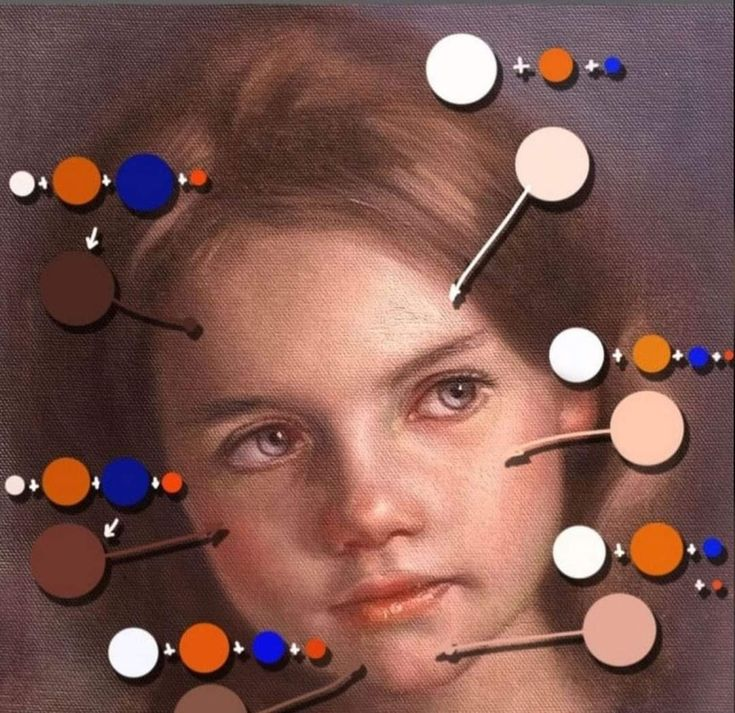
معاني الالوان و رموزها
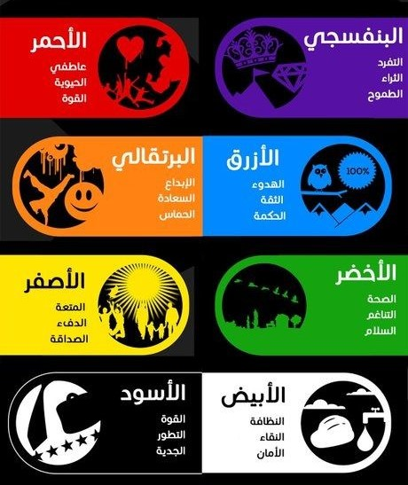كل لون يعكس شعورا او رمزا معينا
استخلاص الالوان الرئيسيه من اللوحه او الصوره
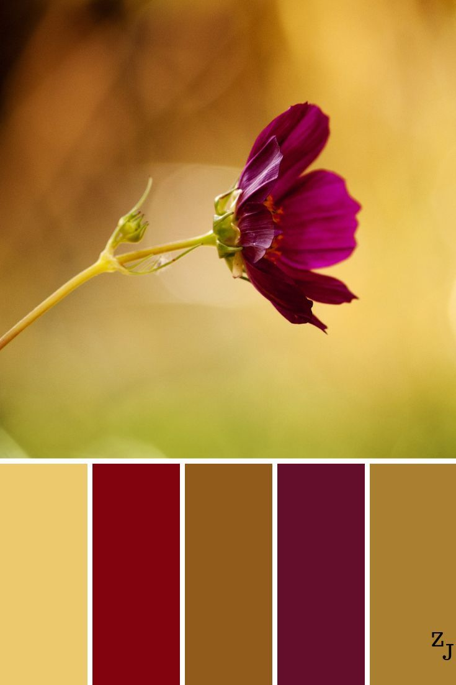
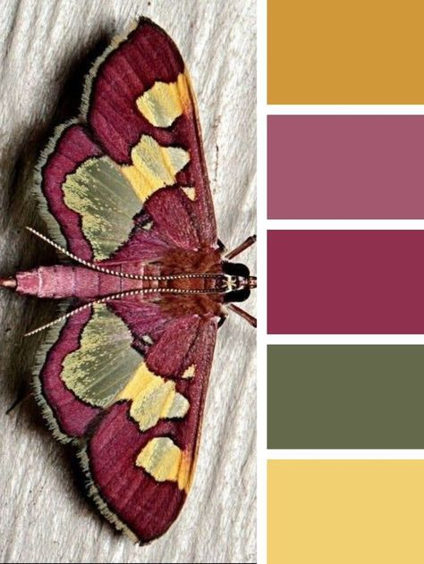
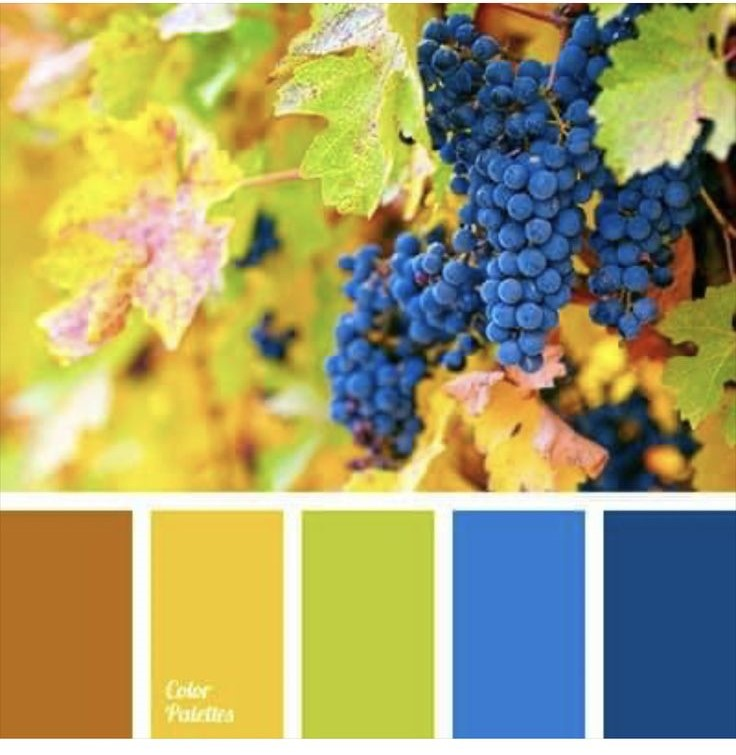
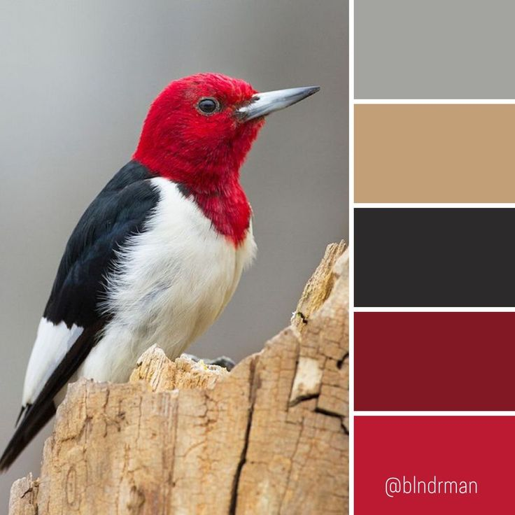
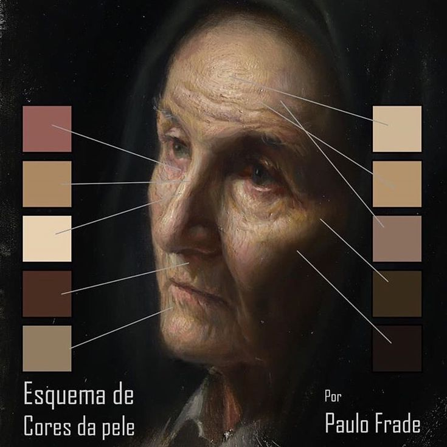


دمج الالوان
 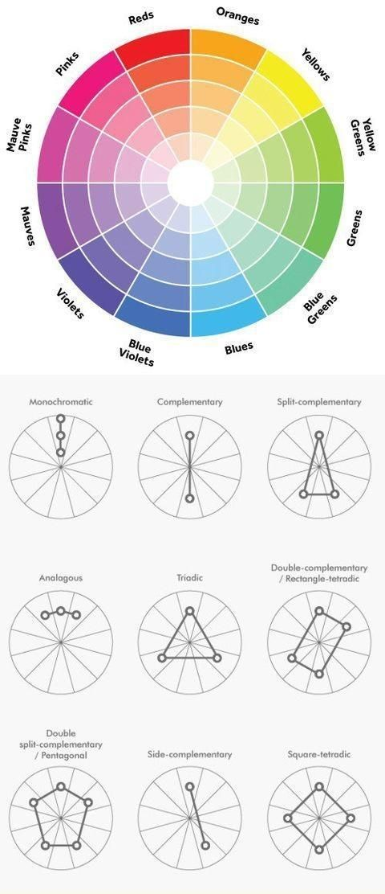
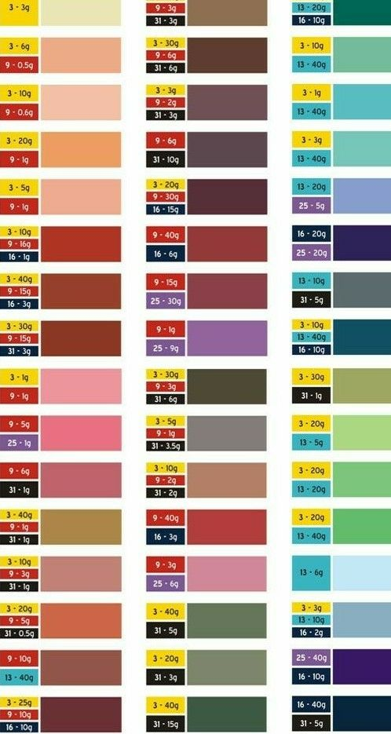
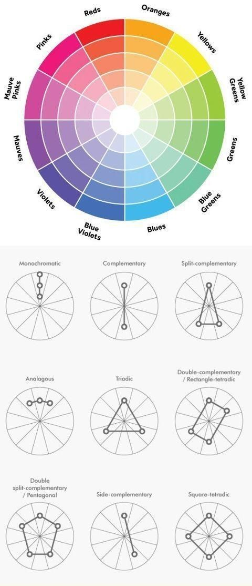
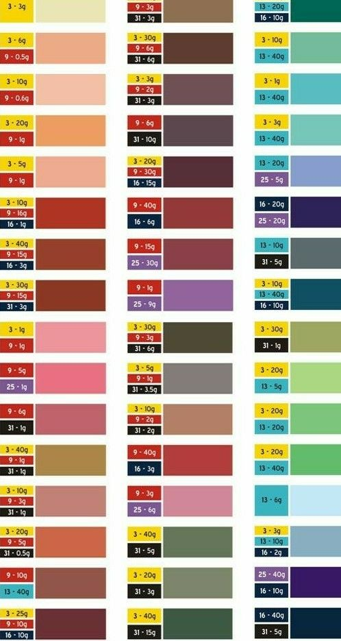